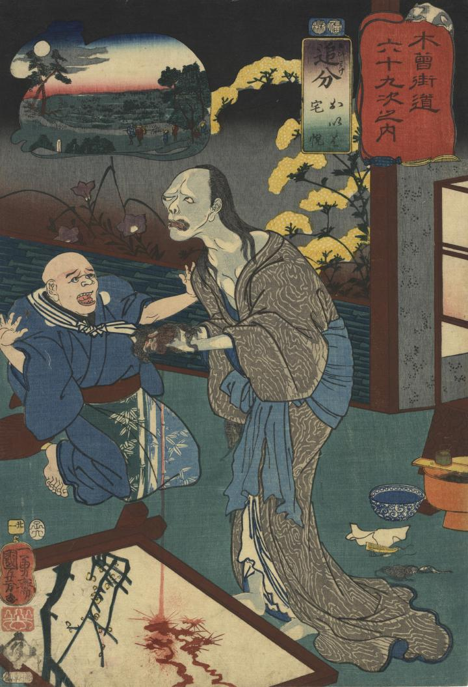

お岩は毒により、ひどい形相に変わってしまった。手に持つ抜けた髪からは血が流れ落ちている。毒を盛った按摩の宅悦は驚いている。
著作者：一勇斎國芳／出典：親書誌：U426_nichibunken_0370：追分 : おいは宅悦；オイワケ : オイワ タクエツ／日付：2014／資源識別子：U426_nichibunken_0370_0001_0000
Copyright (c)2010- International Research Center for Japanese Studies, Kyoto, Japan. All rights reserved.